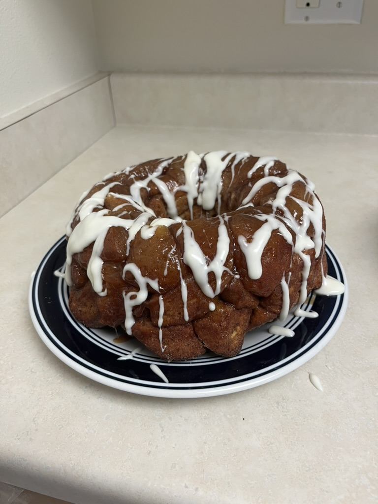

Monkey Bread
Rating: ⭐⭐⭐⭐☆
Notes: Moist and flavorful, would add more cinnamon.
Posted by: jeff
Rating: ⭐⭐⭐⭐☆
Notes: Moist and flavorful, would add more cinnamon.
Posted by: jeff

Rating: ⭐⭐⭐⭐⭐
Notes: Perfect texture.
Posted by: jane